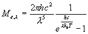

Plancks lag ser för svarta kroppat ut så här:

För grå kroppar multplicerar man med den konstanta a och för färgade kroppar med den våglängdsberoende a.
Man kan plotta kurvan med hjälp av en
matlabsnuttMan kan till och med
få en ytplot av strålningen som funktion av våglängd och temperatur